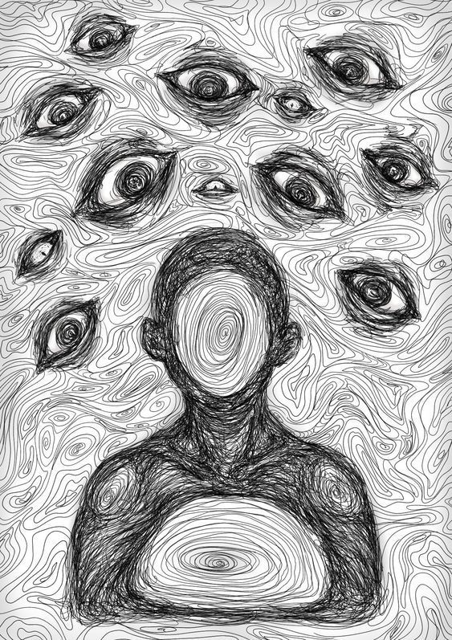
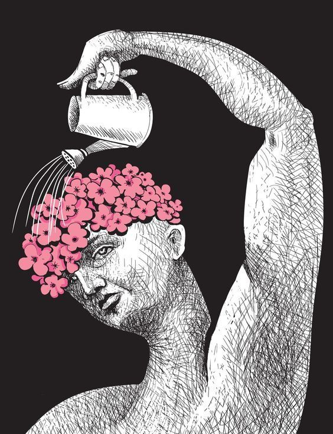

Taking time to care for your mind and body helps improve emotional balance and overall mental health.
Mindfulness and meditation help calm the mind and reduce stress. Practicing deep breathing and focusing on the present moment can improve emotional balance and reduce anxiety.
Even spending 5–10 minutes each day in quiet reflection or meditation can improve focus, emotional control and mental clarity.


Physical activity is one of the best ways to improve mental health. Exercise releases endorphins which help reduce stress and boost mood.
Activities like walking, yoga, stretching or gym workouts can improve both physical and emotional wellbeing.
Getting 7–8 hours of sleep helps your brain recover and stay healthy.
Talking with friends or family can improve emotional wellbeing.
Short breaks during work or study help reduce stress.